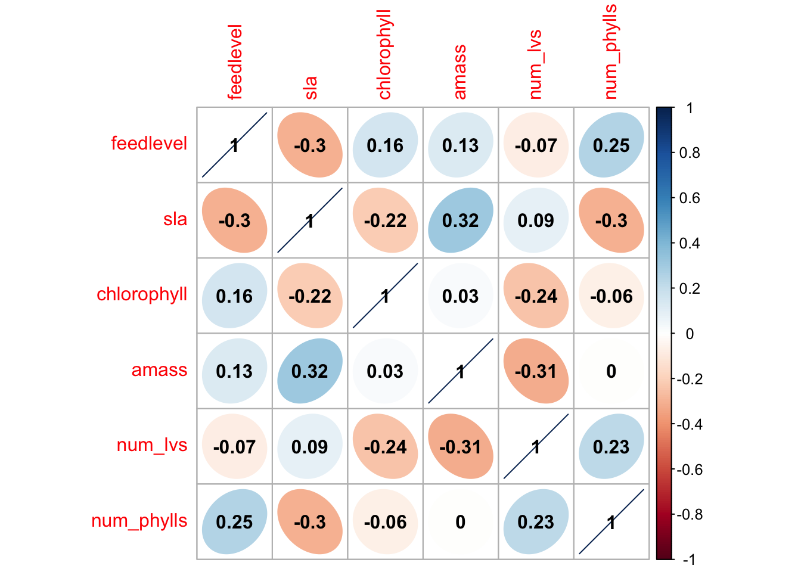
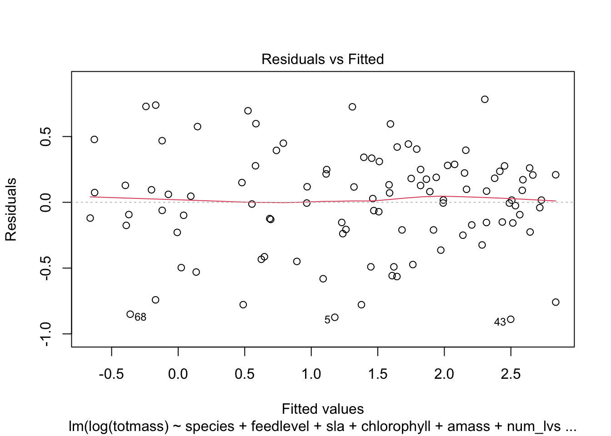

knitr::opts_chunk$set(echo = TRUE, message = FALSE, warning = FALSE)Scratch-Paper
knitr set up options for an RMarkdown document:
Set up
# should haves (from last week)
library(tidyverse)── Attaching core tidyverse packages ──────────────────────── tidyverse 2.0.0 ──
✔ dplyr 1.1.2 ✔ readr 2.1.4
✔ forcats 1.0.0 ✔ stringr 1.5.0
✔ ggplot2 3.4.2 ✔ tibble 3.2.1
✔ lubridate 1.9.2 ✔ tidyr 1.3.0
✔ purrr 1.0.1
── Conflicts ────────────────────────────────────────── tidyverse_conflicts() ──
✖ dplyr::filter() masks stats::filter()
✖ dplyr::lag() masks stats::lag()
ℹ Use the conflicted package (<http://conflicted.r-lib.org/>) to force all conflicts to become errorslibrary(here)here() starts at /Users/graycenmahon/Downloads/GitHub/ENVS-193DS_homework-05library(janitor)
Attaching package: 'janitor'
The following objects are masked from 'package:stats':
chisq.test, fisher.testlibrary(ggeffects)
library(performance)
library(naniar) # or equivalent
library(flextable) # or equivalent
Attaching package: 'flextable'
The following object is masked from 'package:purrr':
composelibrary(car)Loading required package: carData
Attaching package: 'car'
The following object is masked from 'package:dplyr':
recode
The following object is masked from 'package:purrr':
somelibrary(broom)
# would be nice to have
library(corrplot)corrplot 0.92 loadedlibrary(AICcmodavg)
library(GGally)Registered S3 method overwritten by 'GGally':
method from
+.gg ggplot2Read in the data:
plant <- read_csv(here("hf109-01-sarracenia.csv")) %>%
# make the column names cleaner
clean_names() %>%
# selecting the columns of interest
select(totmass, species, feedlevel, sla, chlorophyll, amass, num_lvs, num_phylls)Rows: 120 Columns: 32
── Column specification ────────────────────────────────────────────────────────
Delimiter: ","
chr (1): species
dbl (31): feedlevel, plant.num, fv.fm.lf1, fv.fm.lf2, totmass, rt.sht, mass....
ℹ Use `spec()` to retrieve the full column specification for this data.
ℹ Specify the column types or set `show_col_types = FALSE` to quiet this message.Visualize the missing data:
gg_miss_var(plant)
Subsetting the data by dropping NAs:
plant_subset <- plant %>%
drop_na(sla, chlorophyll, amass, num_lvs, num_phylls)Create a correlation plot:
(example writing) To determine the relationships between numerical variables in our dataset, we calculated Pearsons r and visually represented correlation using a correlation plot.
# calculate Pearson's r for numerical values only
plant_cor <- plant_subset %>%
select(feedlevel:num_phylls) %>%
cor(method = "pearson")
# creating a correlation plot
corrplot(plant_cor,
# change the shape of what's in the cells
method = "ellipse",
addCoef.col = "black"
)
Create a plot of each varable compared against the others
plant_subset %>%
select(species:num_phylls) %>%
ggpairs()`stat_bin()` using `bins = 30`. Pick better value with `binwidth`.
`stat_bin()` using `bins = 30`. Pick better value with `binwidth`.
`stat_bin()` using `bins = 30`. Pick better value with `binwidth`.
`stat_bin()` using `bins = 30`. Pick better value with `binwidth`.
`stat_bin()` using `bins = 30`. Pick better value with `binwidth`.
`stat_bin()` using `bins = 30`. Pick better value with `binwidth`.
Starting regression here:
(example) To determine how species and physiological characteristics predict biomass, we fit multiple linear models.
null <- lm(totmass ~ 1, data = plant_subset)
full <- lm(totmass ~ species + feedlevel + sla + chlorophyll + amass + num_lvs + num_phylls, data = plant_subset)Diagnostics
We visually assess normality and homoskedasticity of residuals using diagnostic plots for the full model:
par(mfrow = c(2, 2))
plot(full)
We also tested for normality using the Shapiro-Wilk test (null hypothesis: variable of interest (i.e. the residuals) are normally distributed).
We tested for heteroskedasticity using the Breusch-Pagan test (null hypothesis: variable of interest has constant variance).
check_normality(full)Warning: Non-normality of residuals detected (p < .001).check_heteroscedasticity(full)Warning: Heteroscedasticity (non-constant error variance) detected (p < .001).null_log <- lm(log(totmass) ~ 1, data = plant_subset)
full_log <- lm(log(totmass) ~ species + feedlevel + sla + chlorophyll + amass + num_lvs + num_phylls, data = plant_subset)
plot(full_log)


check_normality(full_log)OK: residuals appear as normally distributed (p = 0.107).check_heteroscedasticity(full_log)OK: Error variance appears to be homoscedastic (p = 0.071).Evaluate multicollinearity:
car::vif(full_log) GVIF Df GVIF^(1/(2*Df))
species 42.351675 9 1.231351
feedlevel 1.621993 1 1.273575
sla 1.999989 1 1.414210
chlorophyll 1.949828 1 1.396362
amass 2.872084 1 1.694722
num_lvs 2.813855 1 1.677455
num_phylls 2.995510 1 1.730754We evaluated multicollinearity by calculating generalized variance inflation factor and determined that…
Try some more models:
addressing the question: what set of predictor variables best explains the response?
model2_log <- lm(log(totmass) ~ species, data = plant_subset)check assumptions for model 2:
plot(model2_log)


# they are clumped in this way becuase the predictors are categorical, you just want to see an even distribution of normal variables
check_normality(model2_log)OK: residuals appear as normally distributed (p = 0.374).check_heteroscedasticity(model2_log)OK: Error variance appears to be homoscedastic (p = 0.100).compare models. using Akaike’s information criterion (AIC) values
AICc(full_log)[1] 133.9424AICc(model2_log)[1] 157.5751AICc(null_log) [1] 306.0028MuMIn::AICc(full_log, model2_log, null_log) df AICc
full_log 17 133.9424
model2_log 11 157.5751
null_log 2 306.0028MuMIn::model.sel(full_log, model2_log, null_log)Model selection table
(Int) ams chl fdl num_lvs num_phy sla spc df
full_log -1.3390 0.002338 0.004368 -0.4743 0.09176 -0.03959 -0.002493 + 17
model2_log 0.8836 + 11
null_log 1.3500 2
logLik AICc delta weight
full_log -46.371 133.9 0.00 1
model2_log -66.337 157.6 23.63 0
null_log -150.941 306.0 172.06 0
Models ranked by AICc(x) based on the AICc values, the full model has the loswet value and therefore is the best predictor of…
Results
We found that the _____ model including ____ ___ ___ predictors best predicted _____ (model summary).
summary(full_log)
Call:
lm(formula = log(totmass) ~ species + feedlevel + sla + chlorophyll +
amass + num_lvs + num_phylls, data = plant_subset)
Residuals:
Min 1Q Median 3Q Max
-0.88872 -0.20811 0.02825 0.24218 0.78287
Coefficients:
Estimate Std. Error t value Pr(>|t|)
(Intercept) -1.339043 0.597727 -2.240 0.027624 *
speciesalata 1.113163 0.184021 6.049 3.56e-08 ***
speciesflava 1.404562 0.262955 5.341 7.29e-07 ***
speciesjonesii 0.319652 0.196426 1.627 0.107281
speciesleucophylla 1.709035 0.227608 7.509 4.88e-11 ***
speciesminor 0.389310 0.187903 2.072 0.041239 *
speciespsittacina -1.645198 0.207035 -7.946 6.36e-12 ***
speciespurpurea -0.364348 0.254380 -1.432 0.155643
speciesrosea -0.947383 0.260495 -3.637 0.000467 ***
speciesrubra 0.875342 0.196361 4.458 2.46e-05 ***
feedlevel -0.474255 0.234493 -2.022 0.046199 *
sla -0.002493 0.001160 -2.149 0.034430 *
chlorophyll 0.004368 0.001189 3.672 0.000414 ***
amass 0.002338 0.002988 0.782 0.436166
num_lvs 0.091764 0.022413 4.094 9.46e-05 ***
num_phylls -0.039585 0.051714 -0.765 0.446068
---
Signif. codes: 0 '***' 0.001 '**' 0.01 '*' 0.05 '.' 0.1 ' ' 1
Residual standard error: 0.413 on 87 degrees of freedom
Multiple R-squared: 0.8687, Adjusted R-squared: 0.8461
F-statistic: 38.38 on 15 and 87 DF, p-value: < 2.2e-16tables <- tidy(full_log, conf.int = TRUE) %>%
# change the p value numbers if they are really small
# change the estimates, standard error and t-statistics to round to ___ numbers
# using mutate
# make into a flex table
flextable() %>%
# fit into the viewer
autofit()
tablefunction (..., exclude = if (useNA == "no") c(NA, NaN), useNA = c("no",
"ifany", "always"), dnn = list.names(...), deparse.level = 1)
{
list.names <- function(...) {
l <- as.list(substitute(list(...)))[-1L]
if (length(l) == 1L && is.list(..1) && !is.null(nm <- names(..1)))
return(nm)
nm <- names(l)
fixup <- if (is.null(nm))
seq_along(l)
else nm == ""
dep <- vapply(l[fixup], function(x) switch(deparse.level +
1, "", if (is.symbol(x)) as.character(x) else "",
deparse(x, nlines = 1)[1L]), "")
if (is.null(nm))
dep
else {
nm[fixup] <- dep
nm
}
}
miss.use <- missing(useNA)
miss.exc <- missing(exclude)
useNA <- if (miss.use && !miss.exc && !match(NA, exclude,
nomatch = 0L))
"ifany"
else match.arg(useNA)
doNA <- useNA != "no"
if (!miss.use && !miss.exc && doNA && match(NA, exclude,
nomatch = 0L))
warning("'exclude' containing NA and 'useNA' != \"no\"' are a bit contradicting")
args <- list(...)
if (length(args) == 1L && is.list(args[[1L]])) {
args <- args[[1L]]
if (length(dnn) != length(args))
dnn <- paste(dnn[1L], seq_along(args), sep = ".")
}
if (!length(args))
stop("nothing to tabulate")
bin <- 0L
lens <- NULL
dims <- integer()
pd <- 1L
dn <- NULL
for (a in args) {
if (is.null(lens))
lens <- length(a)
else if (length(a) != lens)
stop("all arguments must have the same length")
fact.a <- is.factor(a)
if (doNA)
aNA <- anyNA(a)
if (!fact.a) {
a0 <- a
op <- options(warn = 2)
on.exit(options(op))
a <- factor(a, exclude = exclude)
options(op)
}
add.na <- doNA
if (add.na) {
ifany <- (useNA == "ifany")
anNAc <- anyNA(a)
add.na <- if (!ifany || anNAc) {
ll <- levels(a)
if (add.ll <- !anyNA(ll)) {
ll <- c(ll, NA)
TRUE
}
else if (!ifany && !anNAc)
FALSE
else TRUE
}
else FALSE
}
if (add.na)
a <- factor(a, levels = ll, exclude = NULL)
else ll <- levels(a)
a <- as.integer(a)
if (fact.a && !miss.exc) {
ll <- ll[keep <- which(match(ll, exclude, nomatch = 0L) ==
0L)]
a <- match(a, keep)
}
else if (!fact.a && add.na) {
if (ifany && !aNA && add.ll) {
ll <- ll[!is.na(ll)]
is.na(a) <- match(a0, c(exclude, NA), nomatch = 0L) >
0L
}
else {
is.na(a) <- match(a0, exclude, nomatch = 0L) >
0L
}
}
nl <- length(ll)
dims <- c(dims, nl)
if (prod(dims) > .Machine$integer.max)
stop("attempt to make a table with >= 2^31 elements")
dn <- c(dn, list(ll))
bin <- bin + pd * (a - 1L)
pd <- pd * nl
}
names(dn) <- dnn
bin <- bin[!is.na(bin)]
if (length(bin))
bin <- bin + 1L
y <- array(tabulate(bin, pd), dims, dimnames = dn)
class(y) <- "table"
y
}
<bytecode: 0x7feb232de330>
<environment: namespace:base>use gg predict to back transform estimates
model_pred <- ggpredict(full_log, terms = "species", back.transform = TRUE)Model has log-transformed response. Back-transforming predictions to
original response scale. Standard errors are still on the log-scale.plot(ggpredict(full_log, terms = "species", back.transform = TRUE), add.data = TRUE)Model has log-transformed response. Back-transforming predictions to
original response scale. Standard errors are still on the log-scale.plot(ggpredict(full_log, terms = "chlorophyll", back.transform = TRUE), add.data = TRUE)Model has log-transformed response. Back-transforming predictions to
original response scale. Standard errors are still on the log-scale.plot(ggpredict(full_log, terms = "sla", back.transform = TRUE), add.data = TRUE)Model has log-transformed response. Back-transforming predictions to
original response scale. Standard errors are still on the log-scale.model_pred# Predicted values of totmass
species | Predicted | 95% CI
---------------------------------------
alabamensis | 2.78 | [2.11, 3.65]
alata | 8.45 | [6.58, 10.86]
flava | 11.31 | [7.57, 16.89]
jonesii | 3.82 | [2.78, 5.26]
minor | 4.10 | [3.15, 5.33]
psittacina | 0.54 | [0.37, 0.77]
purpurea | 1.93 | [1.28, 2.91]
rubra | 6.66 | [5.03, 8.82]
Adjusted for:
* feedlevel = 0.18
* sla = 129.27
* chlorophyll = 471.29
* amass = 35.26
* num_lvs = 7.08
* num_phylls = 0.58